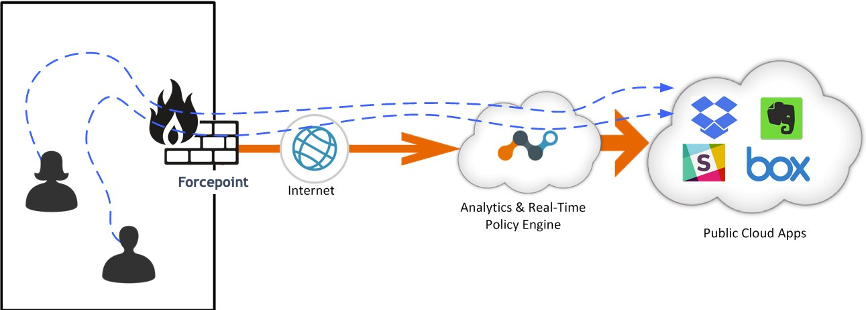
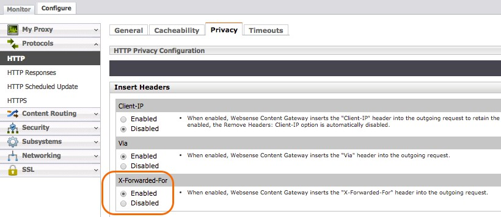
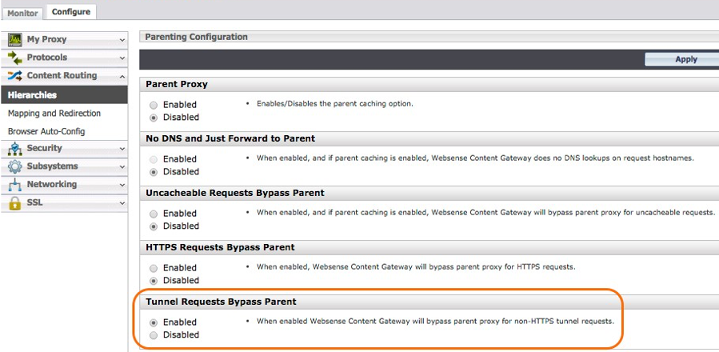

Configure Forcepoint for Proxy Chaining
This document describes how to configure the Netskope Explicit Proxy in the Cloud after a Forcepoint proxy, using Explicit Proxy forwarding to steer cloud app traffic. The primary steps involved include:
Contact Customer Support for IP address whitelisting.
Forcepoint will frontend client connections as normal, so make sure SSL inspection is turned on.
Steer traffic from Forcepoint to Netskope using upstream explicit proxy in the Cloud.
Forcepoint adds X-‐Forwarded-‐For header with client’s IP – enable XFF insertion.
Forcepoint adds X-‐Authenticated-‐User header with client’s username – enable XAU insertion.
Make Forcepoint accept the SSL certs coming from Netskope, and disable cert validation.
This diagram shows how traffic is steered.
|  |
Prerequisites
Forcepoint is expected to be inspecting SSL traffic for Client connections. This document does not cover how to steer traffic from Clients to Forcepoint, or how to make Clients trust the certificates presented by Forcepoint. This procedure assumes those aspects are solved and working correctly.
One important consideration is that SSL inspection must be enabled in order for this solution to work, as the headers required (XFF and XAU) can only be added if SSL interception is enabled. At a bare minimum, traffic destined to cloud apps of interest must be intercepted.
You can download the list of domains associated with apps managed by Netskope from the UI. Go to Settings > Security Cloud Platform > Steering Configuration and click on the steering configuration used to steer traffic to Forcepoint. Click Download Configuration in the top-right corner of the page, and then select the domain type to download the domain list.
 |
If you plan to use the Netskope certificates for configuring the certificate trust chain, go to Settings > Manage > Certificates > Signing CA and download the root and intermediate certificates.
 |
Contact Customer Support
Netskope’s Explicit Proxy in the Cloud does not require configuration in the UI, but it is not enabled by default. Furthermore, tenant-specific access control rules are in place to maintain the security of the solution.
Please submit a Customer Support ticket to enable the functionality, and be prepared to provide the public IP addresses of the proxies in order to whitelist them. Traffic is not allowed from unknown sources.
Ensure the Forcepoint Proxy is Performing SSL Decryption
The primary SSL decryption configuration is performed in Forcepoint. Make sure HTTPS is enabled.
 |
Forcepoint provides the ability to selectively choose which sites, and categories of sites will bypass SSL decryption. Make sure these bypassed sites and categories do not overlap with the Netskope managed applications.
 |
Create Parent Proxy Cache Rules
In order to create clean rules that identify traffic destined to cloud apps that will be managed with Netskope, it’s best to create Parent Proxy Cache Rules with all the relevant domain names and use it throughout the configuration steps.
This can be done in Forcepoint. Go to Configuration > Content Routing > Hierarchies > Parent Proxy Cache Rules.
 |
The list of domains that your Netskope tenant instance is ready to handle can be downloaded from the UI. Open the domain list that you downloaded in the Prerequisites and paste them into this dialog box.
Forwarding Host
Before a rule can be created to send traffic to Netskope’s Explicit Proxy in the cloud, it must be defined as a Parent Proxy inside the Parent Proxies Cache Rules.
The tenant-specific host pxc-<tenant>.goskope.com is activated after the Customer Support ticket is serviced. It will receive HTTP traffic on port 8080 and should respond to pings. Ensure you select Proxy to instruct Forcepoint to use Explicit Proxy mode (HTTP Connect method).
The following screenshot shows this set up for a tenant named AcmeCorp.
 |
Redirecting Traffic
In order for ProxySG to send traffic to Netskope’s Explicit Proxy in the Cloud, Parent Proxy needs to be enabled. Enable the Parent Proxy radio button by going to Configure > Content Routing > Hierarchies > Parent Proxy.
 |
Inserting Headers
You must enable Send authentication to parent proxy within the Forcepoint Basic configuration to ensure Netskope can see the IP address of the original Client and associated username.
 |
Enable Endpoint IP Address (XFF)
‐Forwarded-For is the standard header proxies used to convey the actual IP address of the endpoint, as they hide internal IP addresses when they proxy connections. Go to Configure > Protocol > HTTP > Privacy > Insert Headers > X-‐Forwarded-‐For and click the Enabled radio button.
|  |
Tunnel Requests Bypass Parent
Often the Forcepoint Content Gateway is configured with Tunnel Requests to take SSL decryption bypass actions. Ensure the Set Tunnel Requests Bypass Parent radio button is set to Enabled.
|  |
Proxy Authentication
In order to forward the user name via X-‐Forwarded-‐For header to the Netskope cloud, Proxy authentication needs to be enabled in Forcepoint. If authentication is set to None, user names will not be forwarded to the Netskope cloud. This guide does not cover the configuration of the Forcepoint proxy authentication. Refer to your Forcepoint product documentation for instructions.
 |
Configure the Certificate Trust Chain
You must configure Forcepoint to ignore the broken trust chain. This step must be configured because Netskope will crack SSL open and does not have real certifications for the apps. The easiest way to accomplish this is to instruct Forcepoint to ignore the certs provided by our Explicit Proxy in the Cloud.
Go to Configure > SSL > Incidents > Add Website.
In the URL field, enter
*.goskope.com.Select the By URL radio button.
Select Allow for the Action dropdown.
This ensures only traffic between Forcepoint and Netskope is exempted from certificate checking.
Optionally, you can obtain the Netskope CA certificate from Customer Support and import it into your Forcepoint Certificate Authorities certificate store. To do so, obtain the Netskope certificates as described in the Prerequisites, and go to Configure > SSL > Certificates > Add Root CA and click Add Certificate Authority.
 |